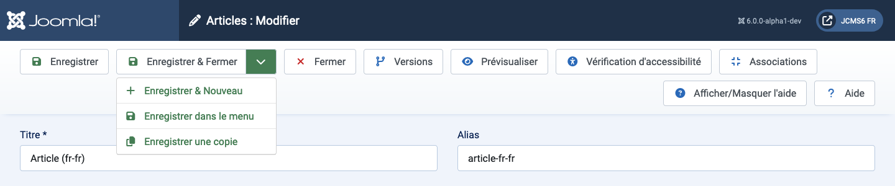
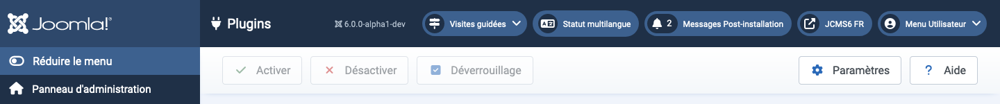

Les barres d'outils sont présentes sur presque toutes les pages de l'administrateur Joomla! Les tableaux de bord sont les exceptions notables. Elles se trouvent en haut de la page, juste en dessous de la barre de titre contenant le nom de la page et divers modules de statut tels que la version de Joomla et le lien vers la page d'accueil.
Chaque page dispose d'un ensemble de boutons adaptés à son objectif. Certains sont communs, comme Enregistrer, Annuler et Aide. D'autres sont rares, comme Reconstruire et Supprimer les orphelins. Certains sont toujours actifs. D'autres sont inactifs (gris) jusqu'à ce qu'une case à cocher d'un élément de la liste soit sélectionnée.
S'il y a beaucoup de boutons, ils s'étendront sur deux rangées. Voici quelques exemples :

Les boutons sans chevron vers le bas opèrent immédiatement. Ainsi, Enregistrer sauvegardera la page et reviendra avec un message de confirmation vert ou un message d'erreur rouge. Notez que, dans la plupart des cas, le bouton Annuler fermera une page de modification sans enregistrer les changements.
Les boutons avec une icône de chevron vers le bas ont deux fonctions. Sélectionnez l'icône et une liste apparaîtra, comme montré dans la capture d'écran ci-dessus. Cela permet de choisir des actions alternatives. Sélectionnez le bouton et cette action sera effectuée. Ainsi, Enregistrer & Fermer dans la capture d'écran d'exemple.
Certains boutons n'apparaissent que dans certaines circonstances. Par exemple, le bouton Vérification d'accessibilité n'apparaît que si le plugin System - Joomla Accessibility Checker est activé. De même, Associations n'apparaît que sur les sites multilingues.
Veuillez explorer ce que font les différents boutons !

Dans cet exemple de barre d'outils, les boutons sont gris pour indiquer qu'ils sont inactifs. Ils deviennent lumineux et actifs lorsqu'une case à cocher d'un élément de plugin est sélectionnée, rendant ainsi possible l'activation, la désactivation ou le check-in. Plusieurs éléments de la liste peuvent être sélectionnés pour une action simultanée, ce qui est l'objectif principal de ces boutons de barre d'outils. Les éléments individuels peuvent être traités avec les icônes de chaque rangée (non montrées).
Traduit par openai.com